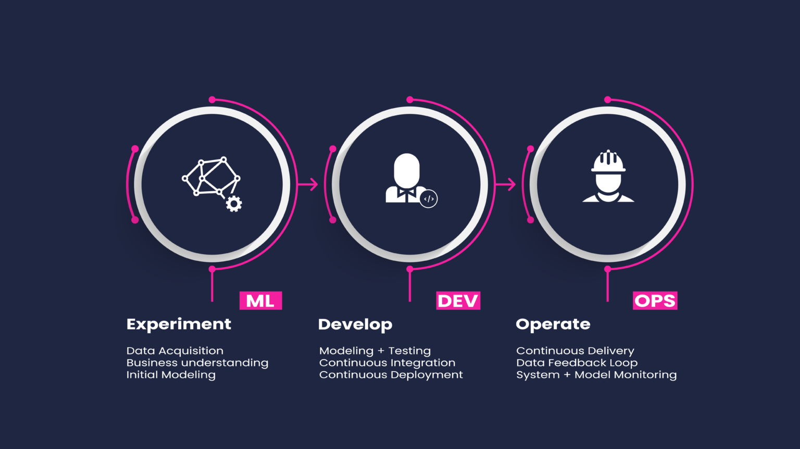
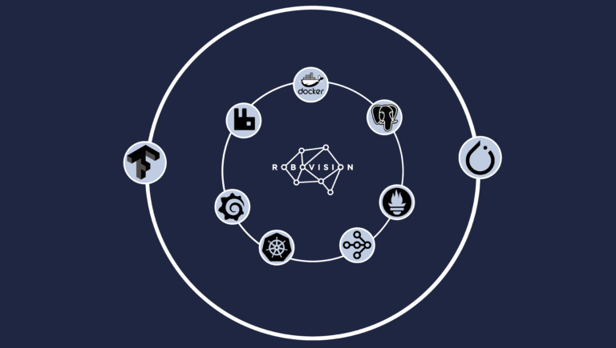
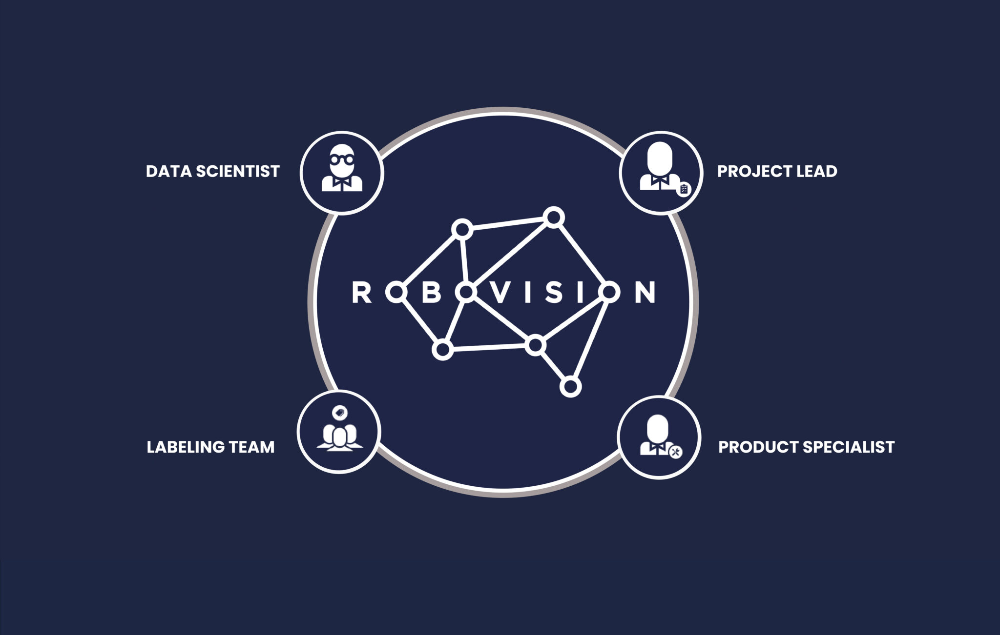
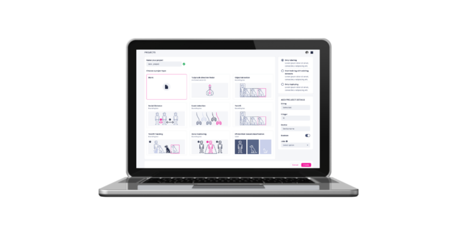

Better Focus, Greater Algorithms
At last, a way for data scientists to easily move computer vision algorithms into production. On a single platform, we combine the engineering and collaborative power for you to focus on what matters the most: solving more business problems and experimenting.

Built-in Software Development Kit (SDK)
Build and design computer vision pipelines without needing any software development skills. Our SDK supports the transition from data science workflows to development workflows. We integrate all technologies in one toolkit and simple interface, you can focus on what matters the most: focusing on building solid models, without worrying about the ops side of things. Let Robovision handle all the maintenance of your AI stack, so that you can push code into production at scale.

Scale Computer Vision Algorithms
Standardise and automate scripts in the SDK, so your computer vision algorithms can be used and reused. By you, but also by your colleagues who can take over operational tasks once your trained models or pipelines are ready. Anyone on board can label, train or retrain on a new data type, without meddling with existing pipelines or frameworks or involving the data team every time. Continuous delivery and monitoring of new models anytime, anywhere.

No Code Needed
Your non-technical departments use computer vision algorithms that the data team has developed. Not to worry! The former don’t need to know any code to collaborate, and the latter can focus on the core activities of data science. Robovision AI bridges the gap between both. Hence, it reduces technical bottleneck. Your operators will now be turning their extensive product knowledge into smart applications, all on their own.

A Real Time-Saver
Manage your AI models and computer vision projects with your eyes closed. The platform’s admin panel has all the information about your projects, from sample types to recent updates. Plus, you can automatically assess labelling results and monitor training progress with TensorBoard, as well as re-evaluate any trained models against new data.
